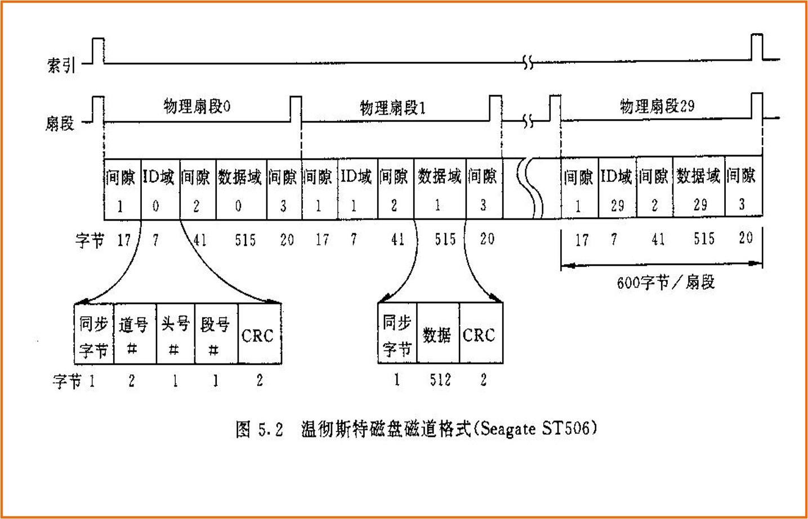
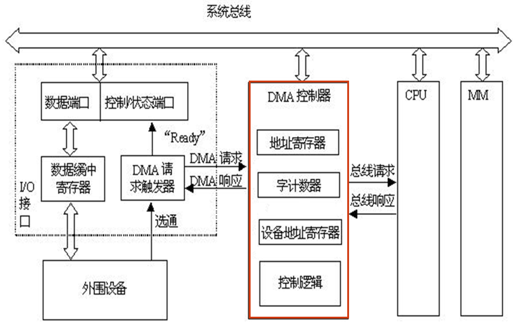

互连及输入输出组织
本文最后更新于：January 1, 2023 pm
Chapter 8: Interconnection and input/output organization
I/O设备和磁盘存储器
I/O系统概述
I/O系统常用的性能指标:
- Throughout(吞吐率/IO带宽): 单位时间内从系统输入/输出数据量
- Latency(响应时间): 请求任务的完成时间
I/O系统的功能: 解决各种形式信息的输入和输出，包括从外设获取输入数据和将数据传输给输出设备。
I/O设备概述
外设分类:
- 按信息传输方向:
- 输入设备: 从外部向计算机输入信息，如：键盘、鼠标、扫描仪等
- 输出设备:从计算机向外部输出信息，如：打印机、显示器等
- 输入输出设备: 既可输入又可输出，如：带触屏的显示器、磁盘存储器等
- 按功能:
- 人-机交互设备:输入/输出的信息是人可读的，或可操作的。如: 键盘、鼠标、扫描仪、打印机、显示器等
- 外部存储设备: 用于信息的存储(其输入/出的信息是机器可读的)。如: 磁盘、磁带、光盘等
- 主机间通信设备: 主要用于计算机和计算机之间的通信。如: 网卡、调制解调器、A/D、D/A等
- 电缆: 通过电缆与计算机内部I/O接口进行数据、状态和控制信息的传送。电缆线中包括控制信号、状态信号和数据信号三种信号线
- 控制逻辑: 根据控制信息控制设备的操作并检测设备状态
- 缓冲器: 用于保存与计算机交换的数据信息
- 变换器: 用于实现电信号形式与其他形式的设备数据之间的转换
所有外部设备均可抽象为该模型，因此以磁盘为例进行说明。
磁盘存储器
磁盘存储器组成
磁盘 = 硬盘控制器 + 硬盘驱动器 + 磁记录介质(盘片)
flowchart TD
PC["主机"]
CR["硬盘控制器"]
DR["硬盘驱动器"]
DK["盘片"]
PC<-->|"I/O总线"|CR
CR<-->|"IDE、USB、SATA···"|DR
DR<-->|"磁头"|DK
- 盘片: 通过一些物理原理来实现信息的保存
- 磁盘驱动器: 包括读写电路、读\写转换开关、读写磁头与磁头定位伺服系统等，实现盘片的读写
- 磁盘控制器: 包括控制逻辑、时序电路、"并→串"转换和"串→并"转换电路等(用于连接主机与盘驱动器)，还包括数据缓存器、控制状态寄存器等，实现主机与磁盘存储器的数据交互和控制
磁盘信息存储原理
当线圈通过不同方向的电流时，磁头磁场方向相反，在磁场的作用下盘片上会保存磁化状态从而表示0/1的信息。在读取时，磁头固定不动，载体运动，在铁芯线圈两端得到感应电压，感应电压的方向能够表示0/1.
盘片划分结构
磁盘表面分为多个同心圆，每个同心圆即一个磁道，其中最外围同心圆为0磁道。每个磁道上被划分为多个段，每个段称为一个扇区，一个扇区固定存储容量为512B(现在扇区划分已提升到4kB)
提高盘片信息记录密度方式:
- 增加磁道数量: 提高道密度
- 增加扇区数量:
提高磁盘容量: 在硬盘中叠加更多片盘片。
磁盘驱动器
定位数据流程:
- 寻道: 磁头径向移动到指定的磁道
- 旋转: 在磁头固定不动的情况下，盘片旋转直到扇区在磁头下停止
- 读写: 通过载体运动产生感应电压从而进行读取数据或磁头加电流进行写操作

磁盘主要技术指标
- 磁盘容量: 磁盘容量分为未格式化容量和格式化容量
- 未格式化容量: 指按道密度和位密度计算出的容量，包括间歇、ID域、数据域等信息。
磁盘总容量=记录面数×柱面数×内圆周长×位密度 - 格式化容量: 格式化后的磁盘容量只包含数据区，即能存储数据信息的容量。
磁盘数据容量=2×盘片数×磁道数/面×扇区数/磁道×512/扇区
- 未格式化容量: 指按道密度和位密度计算出的容量，包括间歇、ID域、数据域等信息。
- 平均存取时间: T = 平均寻道时间 + 平均旋转等待时间 + 数据传输时间，磁盘响应时间 = 排队延迟 + 控制器时间 + 平均存取时间
例: 假定每个扇区512字节，磁盘转速为5400RPM，声称寻道时间(最大寻道时间的一半)为12 ms, 数据传输率为4MB/s, 磁盘控制器开销为1ms, 不考虑排队时间，则磁盘响应时间为多少？
T = 12ms + ms + ms + 1ms + 0ms 18.6ms
RAID(冗余磁盘阵列)
基本思想: 将多个独立操作的磁盘按某种方式组织成磁盘阵列(Disk Array)，以增加容量，利用类似于主存中的多体交叉技术，将数据分散在多个磁盘上，通过这些盘并行工作来提高数据传输速度。
RAID特性:
- RAID是一组物理磁盘驱动器，但在操作系统下被视为一个高容量的单逻辑驱动器
- 数据连续或交叉地分布在一组物理磁盘上，高数据传输率
- 冗余磁盘用于存储校验信息，保证磁盘万一损坏时能恢复数据(一张磁盘专门用于存放校验)
SSD(固态硬盘)
SSD并不是一种磁表面存储器，而是一种使用NAND闪存组成的外部存储系统，与U盘并没有本质差别，只是容量更大，存取性能更好。
SSD的特性:
- 写操作比读操作慢得多
- 内部传输速率远远高于常规硬盘
- 闪存的擦写次数有限，所以频繁擦写会降低其写入使用寿命
总线及系统互连、I/O接口
总线的分类:
- 芯片内总线: 在芯片内部各元件之间提供连接，数据通路中的线均为芯片内总线
- 系统总线: 在系统主要功能部件间提供连接，如CPU、MM和I/O控制器之间
系统总线可以分为单总线结构和多总线结构- 单总线将CPU、MM和I/O控制器通过一条底板总线连接在一起
- 多总线将不同部件用不同总线进行连接，如CPU与MM单独连接的总线，CPU与I/O的高速总线，CPU与I/O的低速总线等
- 通信总线: 在主机和I/O设备或主机与主机之间提供连接，如SATA、USB、SCSI等
系统总线
在Intel体系中北桥将CPU到存储器的总线分为了处理器总线和存储器总线两条总线。系统总线通常由一组控制线、一组数据线和一组地址线构成，但存在地址线和数据线合一的总线，这种情况称为数据/地址复用
总线宽度: 总线中数据线的条数，决定了每次能同时传输的信息位数
总线工作频率: 有些总线一个时钟周期可以传送2次或4次数据，因此，工作频率是时钟频率的2倍或4倍(与DDR技术对应)
总线带宽: 总线的最大数据传输率，B=W ，W为总线宽度，F为总线时钟频率，N为完成一次数据传送所用的时钟周期数
总线传送方式:
- 非突发传送: 每个总线事务都传送地址，一个地址对应一次数据传送
- 突发传送: 即成块数据传送。突发传送总线事务中，先传送一个地址，后传送多次数据，后续数据的地址默认为前面地址自动增量
FSB(处理器总线)
- 并行传输、同步定时方式
- 是第一代CPU总线，使用quad pumped技术: 每个总线时钟周期传送4次数据
QPI(快速通道互连总线)
- 目前在Intel架构中CPU芯片内部核之间、CPU芯片之间、CPU芯片与IOH(I/O Hub)芯片之间，都通过QPI总线互连
- 采用QPI总线的CPU已经将主存控制器集成到芯片，因此主存不需要通过北桥，而是直接与CPU相连
- 发送方和接收方有各自的时钟信号，总线有20条数据线，每条数据线为一个双向的串行传输通道，因此双方都有20个传输通道
- QPI总线带宽为：时钟频率×2×2B×2(不算校验位，按有效数据位计算)
存储器总线
I/O总线
I/O总线用于为系统中的各种I/O设备提供输入输出通道。
I/O总线在物理上可以是主板上的I/O扩展槽，如:
- 第一代: ISA/EISA总线，VESA总线
- 第二代: PCI、AGP、PCI-X
- 第三代: PCI-Express
PCI-Express:
- 串行总线
- 两个PCI-Express设备之间以一个链路(link)相连
- 每个链路包含多条通路(lane)，可以是1,2,4,8,16或32条
- 每条通路可同时发送和接受，每个数据字节被转换为10位信息被传输
- PCI-Express1.0下，每条通路的发送和接受速率都是2.5Gb/s，故PCI-Express×n的带宽为：2.5Gb/s×2×n/10=0.5GB/s×n
I/O总线，I/O控制器和I/O设备的关系
I/O设备通常是物理上相互独立的设备，它们一般通过通信总线与I/O控制器连接。
I/O控制器(I/O接口)通过扩充卡或者南桥芯片与I/O总线连接
I/O总线经过北桥芯片与内存、CPU连接
I/O接口
I/O接口：I/O设备控制器及其插座，I/O接口是I/O设备与主机接入的桥梁。
I/O接口的功能:
- 数据缓冲: 提供数据缓冲寄存器，以达到主机和外设工作速度的匹配
- 错误或状态检测: 提供状态寄存器，以保存各种错误或状态信息供CPU查用
- 控制和定时: 提供控制和定时逻辑，以接受从系统总线来的控制定时信号
- 数据格式转换: 使通过外部接口得到的数据转换为内部接口需要的格式，或在相反的方向进行数据格式转换
- 与主机和设备通信: 能够与主机和设备通信从而实现上述功能
CPU通过I/O接口从而实现控制I/O设备:
- 通过发送命令字到控制寄存器来向设备发送命令
- 通过从状态寄存器读取状态字来获取外设或I/O控制器的状态信息
- 通过向数据缓冲寄存器发送或读取数据来和外设进行数据交换
I/O端口: I/O控制器中CPU能够访问的各类寄存器。因此I/O端口需要编址，I/O设备的寻址方式就是I/O端口的编址方式
- 统一编址方式(内存映射方式): 与主存空间统一编址，将主存空间分出一部分地址给I/O端口进行编号
- 独立编址方式(专门的I/O指令方式): 不和主存单元一起编号，而是单独编号，使成为一个独立的I/O地址空间，因此需要特殊的I/O指令来支持访问I/O端口
I/O传输方式
I/O设备与主机进行数据交换的三种基本方式:
- 程序直接控制方式:
- 无条件传送: 对简单外设定时同步进行数据传送
- 条件传送: 轮询方式，OS主动查询，I/O设备将自己的状态放到一个状态寄存器中，OS阶段性的查询状态寄存器中的特定状态以决定下一步动作。
- 中断方式: 几乎所有系统都支持的方式
- 当一个I/O设备需要CPU的干预时，他通过中断请求来通知CPU
- CPU中止当前程序的执行，调出OS中断处理程序来执行
- 处理完成后返回到中止的程序继续执行
- DMA方式: 磁盘等高速外设成批的直接和主存进行数据交换
轮询方式
轮询方式有独占查询和定时查询来进行的方式，这里以打印机为例通过流程图来表示轮询查询的过程:
程序中断方式
基本思想: 当外设准备好时便向CPU发中断请求，CPU响应后，中止现行程序的执行，转入一个中断服务程序，在中断服务程序中进行输入/输出操作，实现主机和外设接口之间的数据传送，并启动外设工作，中断服务程序执行完后，返回原被中止的程序断点处继续执行。
注意: 中断隐指令是指切换程序间的工作指令，也需要消耗时间。
中断的实质是CPU执行程序的切换: 从当前工作切换到I/O处理程序再切换回来。
中断处理机制其实与异常处理机制几乎完全相同，如CPU中异常处理所示: 主要由关中断、保护断点和程序状态、识别异常(中断)事件步骤组成。但异常和中断的处理还是有所不同，CPU内部产生的异常是不可屏蔽的，必须要处理异常后才能继续运行(在指令执行过程中也必须处理异常而中断可以等指令执行完后再处理)，而通过中断请求的外部中断是可以通过屏蔽字来进行屏蔽的。
中断处理中十分重要的一步是识别异常(中断)事件，而在CPU章中说过，有硬件识别(向量中断方式)和软件识别两种方式，这里将详细说明两种方式识别异常和处理异常的过程。
首先中断响应有一定的条件:
- CPU处于开中断状态(中断允许位开启)
- 在一条指令执行完，因此当中断出现在指令过程中时，必须等待当前指令执行完后才能进行响应
- 至少有一个未被屏蔽的中断请求
在开始中断响应后需要通过隐指令来完成中断响应，中断隐指令具体内容即为关中断、保护现场和识别中断源这三个步骤
软件方式识别中断类型
本质上是一种轮询方法，中断查询程序根据中断请求状态，按优先级顺序来依次查询中断请求状态，从而识别出中断源。
向量中断方式识别中断类型
将所有中断请求状态送到一个排队电路中，根据中断优先级识别出最高优先级的中断请求。一般由中断控制器实现，如Intel8259A。
识别中断后需要调出对应的中断服务程序。然后CPU执行该中断服务程序，当结束后需要恢复现场回到原来的程序。
flowchart TD
Main["原程序"]
subgraph "准备阶段"
Close["关中断"]
Protect["保护现场和旧屏蔽字"]
Query["查询中断原因"]
Set["设置新屏蔽字"]
Open["开中断"]
Close-->Protect-->Query-->Set-->Open
end
Main-->Close
subgraph "中断处理"
Process["执行中断服务程序"]
end
Open-->Process
subgraph "恢复阶段"
Close2["关中断"]
Recover["恢复现场和旧屏蔽字"]
Clean["清除新屏蔽字和中断请求"]
Return["中断返回"]
Close2-->Recover-->Clean-->Return
end
Process-->Close2
Return-->Main
多重中断处理
在一个中断处理(执行中断服务程序)过程中(因为在准备阶段和恢复阶段都会关中断)，若有新的中断请求发生，且新中断优先级高于正在执行的中断，则中止正在执行的中断服务程序，转去处理新的中断。这种情况为多重中断，也称中断嵌套。
中断响应优先级: 由查询程序或硬联排队线路决定的优先权，反映多个中断同时请求时选择哪个响应。
中断处理优先级: 当某个中断正在被处理过程中，有别的中断源的请求发生了，这时就由各中断源的中断处理优先级决定如何响应。如果优先级低的中断发生了则先处理本次中断，若优先级更高的中断发生了则先处理新发生的中断。中断处理优先级由屏蔽字来体现。
DMA方式(直接存储器访问)
程序直接控制方式会产生轮询开销大的问题，而中断控制方式对I/O请求响应慢且数据传送速度慢，因此对于磁盘等高速外设一般采用DMA方式来进行主存和外设间的数据传送
基本思想: 通过专门硬件(DMA接口)来直接控制总线实现外设与主存间的数据传送。
特点:
- 成批数据交换: 一旦启动数据连续读写，且数据间间隔时间短
- 采用请求-响应方式: 当设备准备好数据后就会向DMA控制器发送DMA请求，DMA控制器收到请求后会向CPU申请总线的使用权
- 与中断控制方式结合使用:
- DMA传送前，外设在寻道、旋转等操作结束时会通过中断来通知CPU
- DMA控制器使用总线进行数据传送时，CPU执行其他程序
- DMA结束后会通过DMA结束中断来通知CPU
但DMA向CPU申请总线使用权时可能会出现一些问题，这里以可能出现的情况来进行分析:
- CPU不需使用主存: 即CPU没有使用总线，因此DMA可以直接拿到总线的使用权
- CPU正在访问主存: 必须等到CPU让出总线使用权时才能访存
- CPU也同时将要访问主存: 出现访存冲突，需要处理权限问题
处理访存冲突的方式:
- CPU停止法: DMA传输时，CPU脱离总线停止访问主存直到DMA传完一块数据。
- 优点: 控制简单，适合传输速率很高的外设成组传输数据
- 缺点: CPU收到影响，CPU基本停止工作(没有数据可以使用除非cache命中)
在DMA接口中可设置一个缓冲器，外设先于缓冲器进行交换数据，缓冲满时再由缓冲通过总线与主存进行数据交换
- 周期挪用法: 在存储器工作周期中窃取一部分时间作为DMA传输时间，从而即满足CPU使用也满足DMA使用，但会增加总线控制权等控制信号的开销
- 交替分时访问法: 将每个存储周期分成两个时间片，一个给CPU，一个给DMA，这样在每个存储周期内，CPU和DMA都可访问存储器

DMA数据传送流程
- DMA控制器与CPU沟通好内存地址传输方向等参数信息
- 外设准备好数据后将数据送入数据缓冲寄存器并将DMA请求触发器置为1
- DMA请求触发器向DMA控制器发送DMA请求同时向控制状态端口发送"Ready"信号
- DMA控制器向CPU请求总线
5， CPU完成当前周期后返回总线响应 - DMA控制器通知I/O接口发送DMA响应信号，DMA请求触发器置为0，此时DMA控制器拿到总线使用权
- DMA控制器给出内存地址，I/O接口开始通过总线批量传输数据
- 完成后I/O接口通知DMA控制器完成，DMA控制器通过中断告知CPU DMA传输完成并释放总线
DMA与中断方式的区别
- DMA通过DMA控制器完成数据传输，而中断通过中断服务程序完成数据传输
- DMA是对总线使用权的请求，而中断是对CPU执行的请求，使用的资源类型不同
- DMA响应是在一个总线周期后，而中断响应是在一个指令周期后
- DMA的数据传送效率高于中断，且DMA的并行度高于中断方式
本博客所有文章除特别声明外，均采用 CC BY-SA 4.0 协议 ，转载请注明出处！